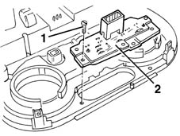

5040C64 a/c manual control switch (one) - r+r
- Path
- Procedures > 50 AUXILIARY UNITS > 5040 AIR CONDITIONING CASING AND COMPONENTS > 5040D AIR CONDITIONER CONTROLS > 5040C64 a/c manual control switch (one) - r+r
- Kind
- repair procedure (removal / refitting; the operation number is the code)
- Applies to
- all engines; all production periods
- Interactive page
- https://sloeber94.github.io/elrnDB-fMltpl/en/#/2891836
Applies to: all engines; all production periods
 Removing
Removing
 Refitting
Refitting2125C24 gear lever knob - r + r
7065C10 air conditioning control panel - r+r
1. Undo the bolts fixing the switch.
2. Remove the switch.

Applies to: all engines; all production periods
Refitting
RemovingCheck that the switch is not damaged and, if necessary, conduct an electrical test on it.
Position the switch.
Tighten the bolts fixing the switch.